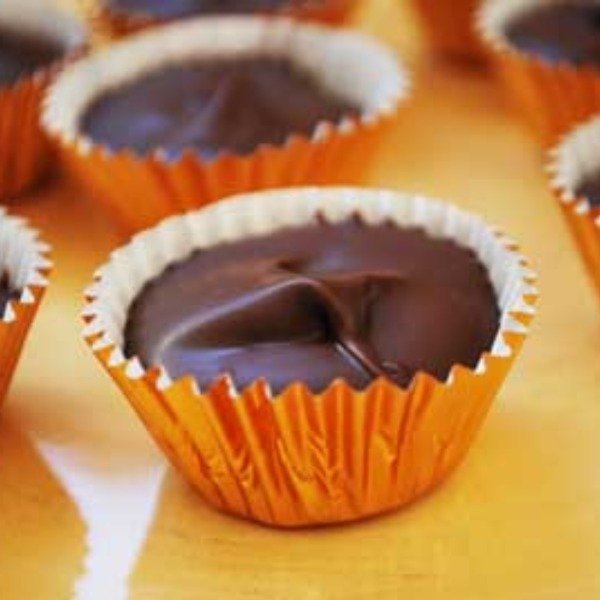

Peanut Butter Cups

Description
I made several dozen of these last Christmas for a fellowship but didn’t try one myself before we brought them. By the time I saw the tin during the fellowship, the tin was empty! I used chocolate candy coating in this recipe, which much more inexpensive than actual chocolate, but I might make them again with real dark chocolate! Either way, they are delicious and so easy to make, the children will enjoy taking over for you (without an argument I’m sure).
Ingredients
- 1 c. graham crackers, finely chopped
- 1 tsp. vanilla
- 3/4 c. crunchy peanut butter
- 1 1/2 c. powdered sugar
- 1 1/2 Tbsp. half & half
- 1 - 2lb. package chocolate candy coating for the chocolate layer
Steps
- Mix the graham crackers, vanilla, peanut butter, powdered sugar, and half and half. Mix well until a stiff batter.
- Prepare your pans while your batter sits for a few minutes.
- Melt the chocolate coating in microwave or oven top, until smooth.
- In liners, gently spoon 1 tsp of chocolate coating, spread evenly around bottom. Put in freezer for about 5 minutes.
- After chocolate is firm, it's ready for the peanut butter filling, make 1/2 balls from the filling and spread over the chocolate.
- Then top with 1 tsp (or a little more) of melted chocolate over peanut butter filling, chill again until firm. And enjoy.